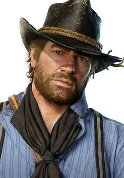

Kratos
Hijo de Zeus y una mortal, nacio en Esparta, Grecia. Se convirtio en un general temido y respetado hasta que en una desafortunada batalla se vio forzado vender su alma al dios de la guerra, Ares, para salvar su vida y derrotar a sus enemigos. En una de las misiones que su nuevo amo le encardO, Ares lo engaño para matar a su familia, desde entonces, Kratos ha jurado vengarse de todos aquellos que lo hayan traicionado.
Arthur Morgan

Outlaw del viejo oeste y huerfano desde joven, miembro de la banda de los Van der Linde. Con una moralidad ambigua, buscan defender su estilo de vida de aquellos que los quieren eliminar en pos de la civilizacion y el progreso. Por situaciones de la vida, Arthur se ve forzado a emprender un viaje personal en el que buscara su redencion